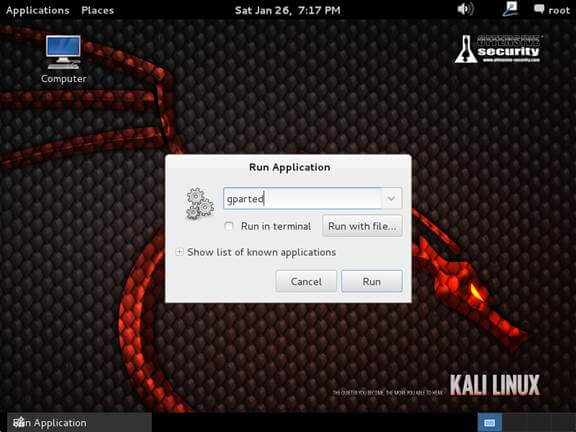
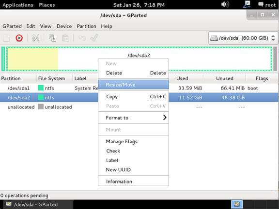
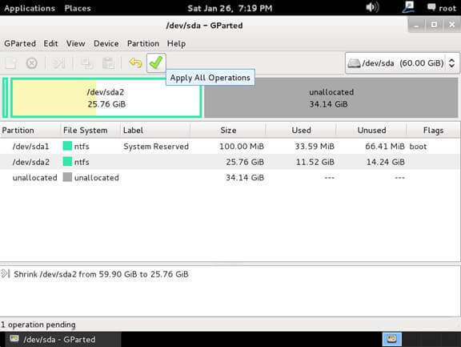
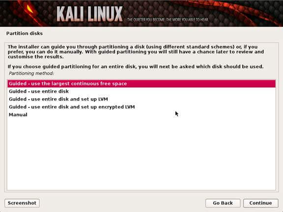

S A A R P N
How To Dual Boot Kali with Windows
Installing Kali alongside a Windows installation can be quite useful. However, you need to exercise caution during the setup process. First, make sure that you have backed up any important data on your Windows installation. Since you will be modifying your hard drive, you will want to store this backup on external media. Once you have completed the backup, we recommend you peruse Kali Linux Hard Disk Install, which explains the normal procedure for a basic Kali install.
In our example, we will be installing Kali Linux alongside an installation of Windows 7, which is currently taking up 100% of the disk space in our computer. We will start by resizing our current Windows partition to occupy less space and then proceed to install Kali Linux in the newly-created empty partition.
1.Download Kali Linux and either burn the ISO to DVD, or prepare a USB stick with Kali linux Live as the installation medium. If you do not have a DVD or USB port on your computer, check out the Kali Linux Network Install. Ensure you have:
Requirement
1.Minimum of 20 GB free disk space on Windows
2.CD-DVD / USB boot support
Preparing for the Installation
1.Download Kali Linux.
2.Burn The Kali Linux ISO to DVD or copy Kali Linux Live to USB.
3.Ensure that your computer is set to boot from CD / USB in your BIOS.
Dual Boot Installation Procedure
1.To start your installation, boot with your chosen installation medium. You should be greeted with the Kali Boot screen. Select Live, and you should be booted into the Kali Linux default desktop.
2.Now launch the gparted program. We will use gparted to shrink the existing Windows partition to give us enough room to install Kali Linux.

3.Select your Windows partition. Depending on your system, it will usually be the second, larger partition. In our example, there are two partitions; the first is the System Recovery partition, and Windows is actually installed in /dev/sda2. Resize your Windows partition and leave enough space (20 GB minimum) for the Kali installation.

4.Once you have resized your Windows partition, ensure you Apply All Operations on the hard disk. Exit gparted and reboot.

Kali Linux Installation Procedure
1.The installation procedure from this point onwards is similar to a Kali Linux Hard Disk install, until the point of the partitioning, where you need to select Guided use the largest continuous free space that you created earlier with gparted.

2.Once the installation is done, reboot. You should be greeted with a GRUB boot menu, which will allow you to boot either into Kali or Windows.
Post Installation
1.Now that you have completed installing Kali Linux, it is time to customize your system.
All Done